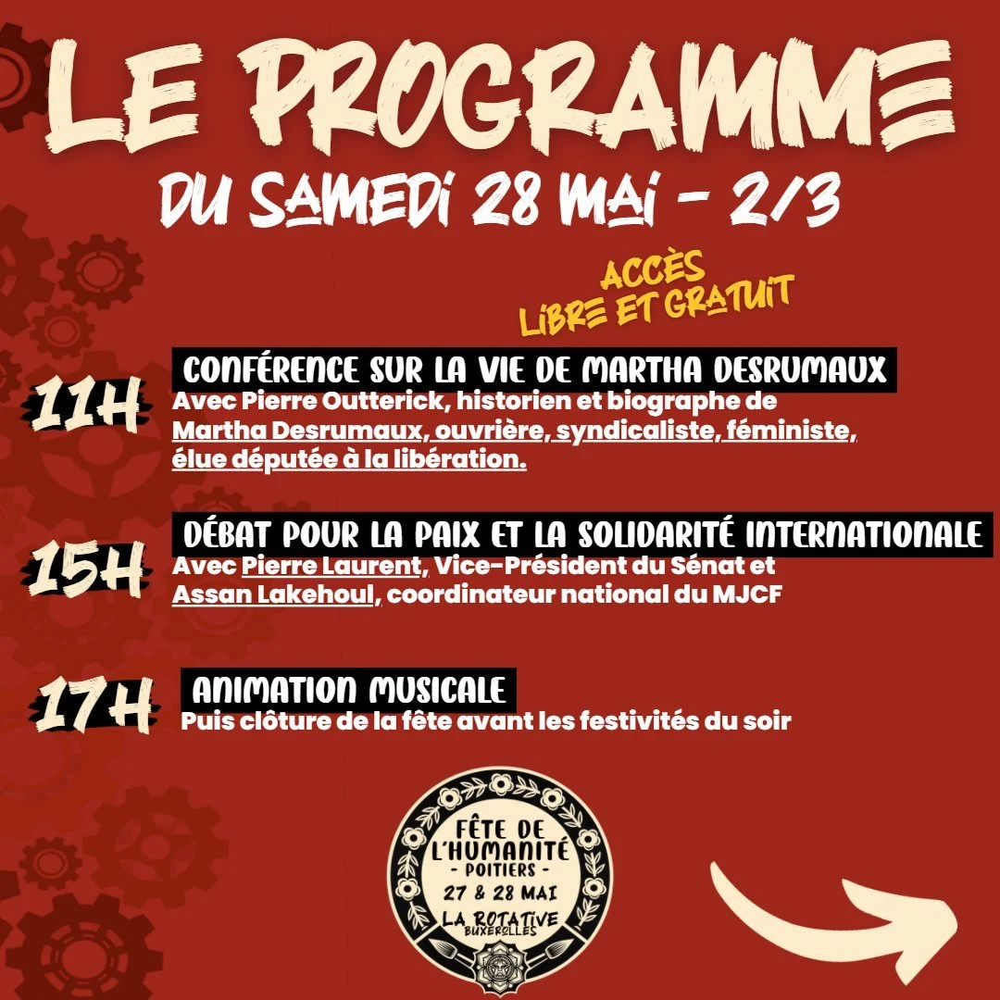
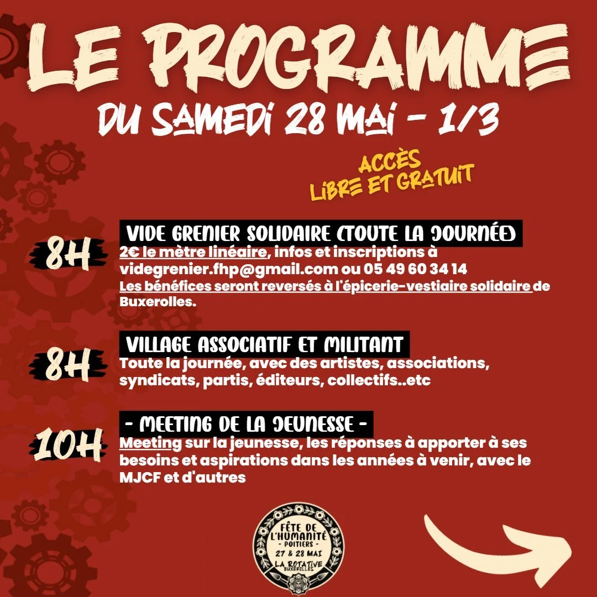
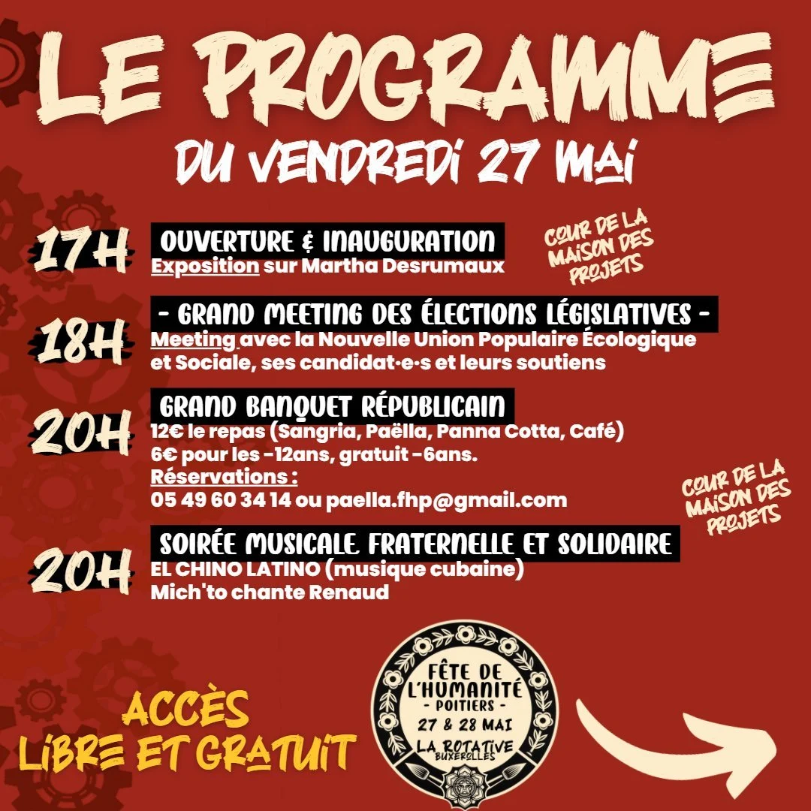
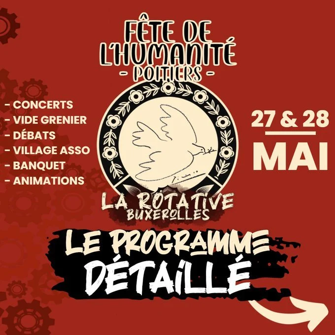
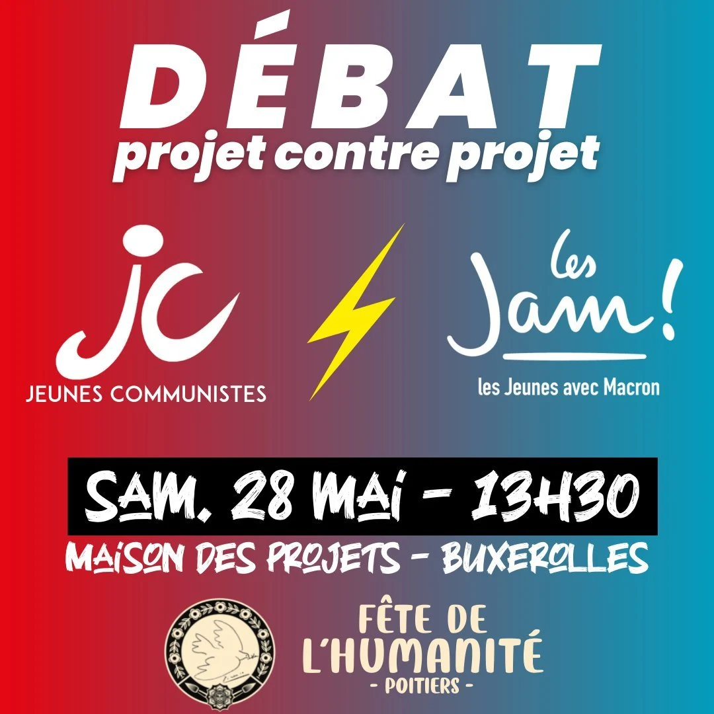
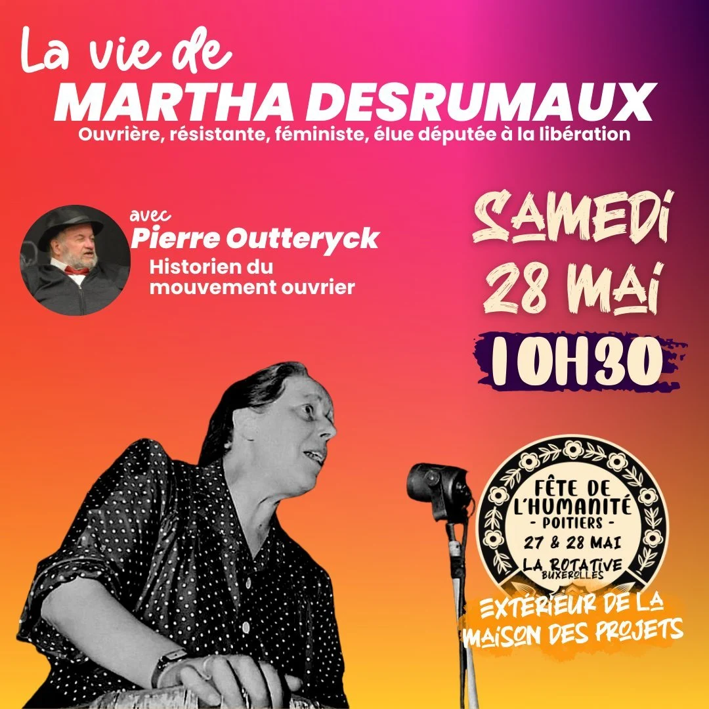
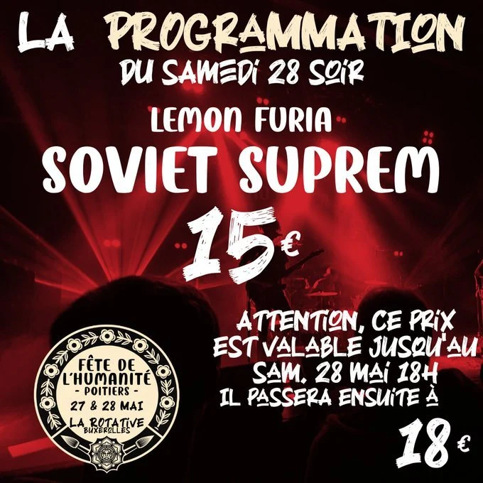

Publication d’archives
Fête de l'Humanité Poitiers 27 et 28 mai 2022.
Date indiquée par Facebook · 26 mai 2022
Texte conservé avec la publication
Contexte du dossier
La fédération relaie la fête de l’Humanité de Poitiers des 27 et 28 mai, avec débats, tables rondes et concerts, puis la fête de l’Humain d’abord annoncée à Queaux les 26 et 27 août. En septembre, elle souhaite une belle Fête de l’Humanité pour les 9, 10 et 11, sur son nouveau site du Plessis-Pâté. Ces messages invitent à des rencontres mêlant politique et musique. Leur point commun est l’accès à une expérience collective : écouter, échanger, découvrir et faire vivre les liens entre fédérations. Ils ne permettent pas de dresser un bilan de participation.







Sources
Archive rouge · export Facebook · AR-0002-FB-01885
À lire aussi · #Qatar2022 « Je comprends ces mouvements de boycott. Mais c’est trop tard, il fallait se révolter il y a 12…